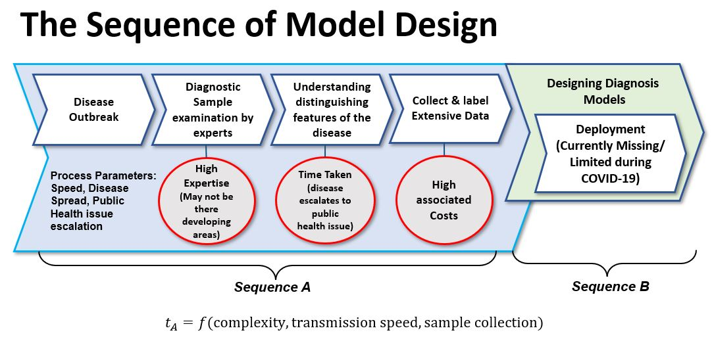

|
I am a final year undergraduate student at the amazing Thapar Institute of Engineering and Technology, India majoring in Mechanical Engineering with a Minor in Computer Science. I am broadly interested in the fields of Artificial Intelligence, Continual Learning, Cognitively-Inspired Computation, Deep Learning and Computational Biology. I was fortunate enough to collaborate with some awesome mentors. I worked with Prof. Vinay Kumar and Prof. Rahul Upadhyay at the Thapar Artificial Intelligence Lab (TAiL), and Prof. Neeraj Kumar on some amazing research projects. I have been working closely with Prof. Apurva Narayan at the UBC-IDSL Lab starting from Summer 2021. I also spent a wonderful time working with at School of Computer Science at the Carnegie Mellon University as a Research Intern working actively on Continual Learning. Email · LinkedIn · Google Scholar · Github |
{kind=link}
|
Oct 20-now: CMU Research Intern Continual Learning, 3D Object Classification, Biologically-Inspired Computation, Few-Shot Learning, Agent Learning in Open-Endedness July 21-Sep 21: MITACS GRI at UBC, Canada Data-efficient Learning, Sparse representations, In-silico Methods Aug 20-now: Thapar Artificial Intelligence Lab Multimodal Learning, Incremental Learning, Fuzzy-Decision Making, Cognitively-Inspired Computation Summer 21: IIT Kanpur SURGE Fellow Design, Fabrication, Experimentation Jan 21-Jun 21: Tata Motors Limited Intern Transfer Learning, Neural Networks for the Shopfloor Oct 20-Mar 21: NUS, Singapore Self-Supervised Learning, Sim2Real Transfer, Domain Randomization July 20: Bharat Heavy Electricals Limited Computer-Aided Design, Modeling, Optimization. Summer 20: IIT Kanpur Research Intern Deep Learning, Computer Vision, Natural Language Processing 2018-2022: Thapar Institute of Engineering & Technology BE major in Mechanical & minor in Computer Science
|
|
|

|
Aviral Chharia, Apurva Narayan IEEE International Conference on BioInformatics & BioEngineering (BIBE), 2021 Despite progress in deep learning, in silico B-cell epitope prediction has low levels of accuracy compared to NMR spectroscopy and X-ray structural analysis. Can we improve precision rates without larger datasets? |

|
Aviral Chharia, Neeraj Kumar Medical Image Computing & Computer Assisted Intervention (MICCAI) PRIME, 2021. Proposed a Multimodal Cognitively-inspired model that attained state-of-the-art accuracy, framing the task as an Incremental Learning Problem. Proposed approach allows the model to continually update its learned feature space on non-stationary multimodal data stream. Demonstrated the model's ability to learn complex relationships between different multimodal attributes, training on severly imbalanced and limited data by mapping it to a high-dimensional fused feature space. |

|
Aviral Chharia, Rahul Upadhyay, Vinay Kumar NeurIPS 2021: AI for Science: Mind the Gaps Workshop Proposed a fuzzy intelligence model for short (<30 aa) AMP activity prediction, and its ability to learn on limited and severely skewed high-dimensional space mapping is demonstrated over a set of experiments. The proposed model significantly outperforms state-of-the-art ML models trained on the same data. |
{kind=link}
|
|
Aviral Chharia*, Shivu Chauhan*, Rahul Upadhyay, Vinay Kumar NeurIPS 2021: AI for Science: Mind the Gaps & Human-Centered AI Workshops The AI community being obsessed with state-of-the-art scores (80% papers NeurIPS) due to which the environmental metric of models remains unreported. Here we proposed a novel evaluation metric, i.e., NATURE, for measuring the environmental performance of AI Models. Presented an in-depth attention highlighting the current gaps in Neuromorphic Computing and demonstrated mathematically why SNNs are better compared to traditional ANNs. |
{kind=link}
|

|
Aviral Chharia, Neeraj Kumar NeurIPS 2021: ML for Public Health Workshop Proposed a new paradigm to address the challenges faced in designing current Computer-Aided Diagnosis Models. |

|
Aviral Chharia, Rahul Upadhyay IEEE International Congress on Ultramodern Telecommunication & Control Systems, 2020 Developed a real-time assistance system to aid the visually impaired through recitation of surrounding scene descriptions generated using a Deep Recurrent Architecture combining CNN based feature extraction with Long-Short Term Memory (LSTM). |

|
Aviral Chharia*, Nishi Mehta*, Shivam Gupta*, Shivam Prajapati* International Conference on Fluid Flow & Thermal Sciences, 2021 Electronic Thermal management is a prerequisite for enhancing efficiency, lifespan and the prevention of overheating in electronic systems. This study presents an in-depth view of the recent models developed as an alterantive to traditional numerical approaches. |

|
Aviral Chharia*, Shivu Chauhan*, Shankhaneel Basak*, Bikramjit Sharma IEEE Global Conference on Advancement in Technology, 2021 Pulmonary Barotrauma is a major cause of Ventilator-Induced Lung Injury in COVID-19 patients. Can mechanical design and control system improvements address this challenge in a cost-constrained scenario? |
|
|
Shivam Prajapati, Yogesh Upadhyay, Aviral Chharia, Bikramjit Sharma IEEE Global Conference on Advancement in Technology, 2021 This study presents a novel hybrid Fuzzy AHP-TOPSIS approach for muti-criteria feature-based recommender system. |
|
|
Shivam Prajapati, Nishi Mehta, Aviral Chharia, Yogesh Upadhyay International Conference on Contemporary Advances in Mechanical Engineering, 2021 Analysed the SARS-CoV-2 disease transmission in an Intensive Care Unit and highlighted the flow of aerosol particles considering the combined as well as individual effects of Fan and Air Conditions. Obtained results emphasized that aerosol particle flow has a promising application in sanitizing ICUs. |
|
|
Shivam Prajapati, Aviral Chharia, Nishi Mehta, Shulabh Yadav International Conference on Contemporary Advances in Mechanical Engineering, 2021 Investigated the characteristics of conjugate heat transfer on various orientations of computationally modeled artificial porous media structure useful in biomedical applications. The study establishes that for both horizontal and vertical orientations, an increase in porosity results in an increase of heat transfer rate from the porous media. |
|
|
|
|
National University of Singapore Code to be out soon Origami-inspired robots have drawn immense attention in recent years due to their shape morphing ability that is useful in a wide range of medical applications. However, shape-invariant pose estimation remains a challenge and is vital to study, control and automate the locomotion of origami robots. Proposed a Residual attention learning-based network trained using a self-supervised approach on domain randomized Endoscopic synthetic data to infer the robot’s pose in real-world data. |

|
Tata Motors Limited, Lucknow Guide: Er. Vivek Tyagi, Prof. Atul Sharma Lead the project that implemented Industry 4.0 integration of Coolant Dispensing Machine on Assembly Line which led to a cost saving of 0.165 million USD/year. Installed & analysed DURR wheel alignment machine for high-precision, contactless vehicle geometry determination & its subsequent Correction at Axle Level. Developed an automatic visual inspection system for quality control by identifying & classifying surface defects in steel strips using CNNs. Performed pedictive maintenance for downtime reduction on Assembly Lines. |

|
Thapar Developer's Student Club Developed an end-to-end Self-driving car using CNN to map pixels from front-camera to steering angles on a simu-lator. This deep learning approach required minimum training data & the system learned to steer, with or withoutlane markings, on both local roads & highways, even with unclear visual guidance in various weather conditions.The vehicle could identify traffic signs & avoid collisions. |

|
Guide: Prof. Neeraj Grover Performed design, modeling and structural analysis of Beams, Cylinders, Plates and shells. Designed a cost-effective and lightweight aircraft wing (NACA- 4412), using carbon- and glass- fibre-reinforced plastic (CFRP and GFRP) composites. Modeled wing internal structure in SOLIDWORKS and performed the structural and vibration analysis in ANSYS with comparative study of spars of different cross-sections. |
Major Academic Achievements
- Selected to deliver a 'Lightening Talk' at NeurIPS 2021: ML for Public Health.
- Received MITACS Globalink Research Award 2021 (CAD$1200) to pursue funded project at The University of British Columbia.
- Awarded Students Undergraduate Research Graduate Excellence 2021 by IIT Kanpur (<4% acceptance).
- Winner of the University of Queensland Engineering Design Hackathon, 2020.
- Best Research Paper Award at the ICCAME 2021 Conference.
- Received Dean's Merit List Scholarship worth 50% Tuition Fee for being in Top 03% Dept. Ranks in AY 2019/20.
- Achieved All India Rank 1 in ICSE 2015 Computer Science exam out of 0.16 Million applicants.
- Secured World Rank 98 in the International Olympiad of English Language 2016, Special achievement award.
- Secured World Rank 264 in the International Olympiad of Mathematics 2015, Special achievement award.
- Cleared the Uttar Pradesh State level of the National Talent Search Examination (NTSE) 2015.
- Bagged two Bronze Medals in 6th Intl. Young Mathematicians' Convention in both individual and team contests.
Key Coursework
- Computer Science: Computer Programming, Object-Oriented Programming, Data Structures and Algorithms, Machine Learning, Database Management Systems, Computer Networks, Operating Systems
- Mathematics: Mathematics-I (Sequences & Series, Advanced Calculus), Mathematics-II (Linear Algebra, Complex Analysis, Differential Equations), Numerical Analysis, Optimization Techniques, Graph Theory & Applications*
- Key Mechanical Engineering Courses: Engineering Materials, Mechatronics Systems, Computer-Aided Design & Analysis, Mechanics of Deformable Bodies, Solids & Structures, Mechanics of Machines, Machine Design- I & II*, Dynamics & Vibration, Applied Thermodynamics, Fluid Mechanics & Machinery*, Work Study & Ergonomics*
- Online Courses: CS330 - Deep Multi-Task and Meta Learning(Stanford), CS231n - Convolutional Neural Networks for Visual Recognition(Stanford), CS229 - Machine Learning (Stanford), 6.S191 - Intro to Deep Learning(MIT) *Currently Undergoing
Technical Skills
- Programming Languages: C, C++, JAVA, Python, MATLAB, HTML
- Libraries and Research Tools: Scikit-Learn, Pandas, PyCaret, NumPy, Seaborn, Matplotlib, Git, LATEX, Inkscape
- Softwares and Simulations: OpenCV, Tensorflow, Keras, SOLIDWORKS, PTC-Creo, AutoCAD, ANSYS
Contact